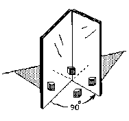

Mathematics in Science
Michael has been working through Don's worksheet book and with Don via email, for over a year. In chapter 6 there is a diagram of hinged mirrors below. Students are asked to look between the mirrors to see how many images of a red rod, say, that they see with the mirrors open at an angle of 90o (3 + the original=4).

Michael made the diagram below, using an angle of 60o between the mirrors. He proceeded to show the path of the light rays as they leave the red rod, bounce off the mirrors (the angle of incidence equals the angle of reflection) and to go to the eye. He made the diagram in GeoGebra (a free program). He found the 6 images (5+original=6); and they all lie on the same circle! He got the rule for this part of an hyperbola xy=360 (no negatives) and graphed the data.
Fine work Michael!